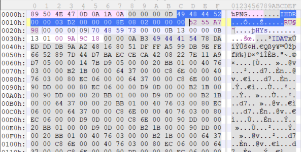

import struct import zlib for i in range(4096): for j in range(4096): c = bytes.fromhex('4948445200000384000000960802000000')# IHDR ihdr = c[:4]+struct.pack('>i',i)+struct.pack('>i',j)+c[12:] crc = 0x5255A798# CRC32 if zlib.crc32(ihdr) == crc: print(hex(i),hex(j)) exit(0)

6：png爆破高度
# -*- coding: utf8 -*-
import os import binascii import struct misc = open("misc26.png", "rb").read()
# 爆破宽 for i inrange(1024): data = misc[12:16] + struct.pack('>i',i)+ misc[20:29] #IHDR数据 crc32 = binascii.crc32(data) & 0xffffffff if crc32 == 0xEC9CCBC6: #IHDR块的crc32值 print('weight') print(i) print("hex:"+hex(i))
# 爆破高 for i inrange(1024): data = misc[12:20] + struct.pack('>i',i)+ misc[24:29] crc32 = binascii.crc32(data) & 0xffffffff if crc32 == 0xEC9CCBC6: print('height') print(i) print("hex:"+hex(i)) #height #606 #hex:0x25e
for char in text: #Foreach char if char == firstType: #Check if it is the first type binaryString += '0' #Mark it as 0 # print(char) else: binaryString += '1' #Mark it as 1 # print(char)
print(binaryString) #Print result print((len(binaryString)-1)/7)